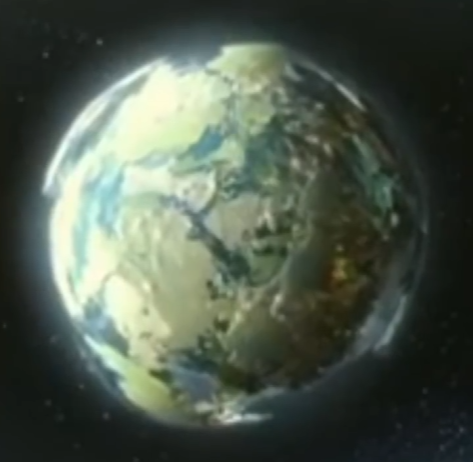
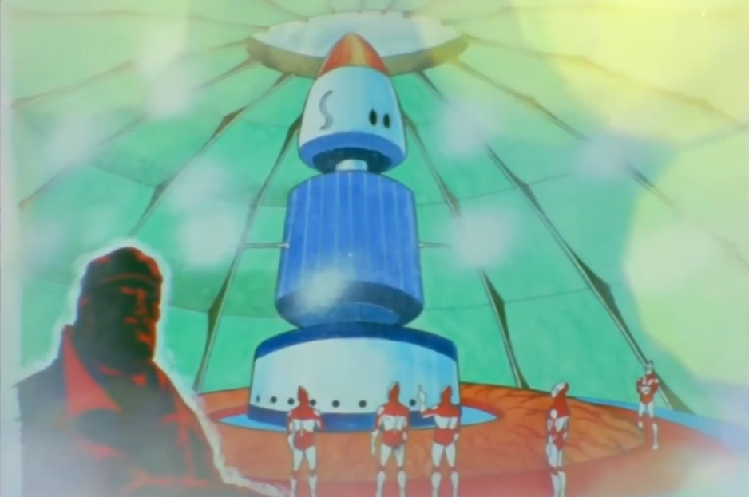
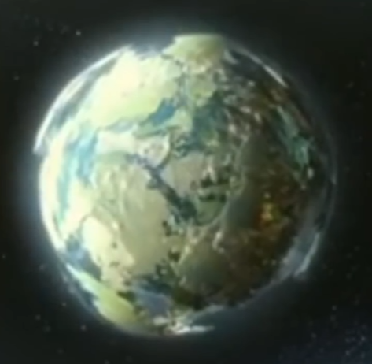
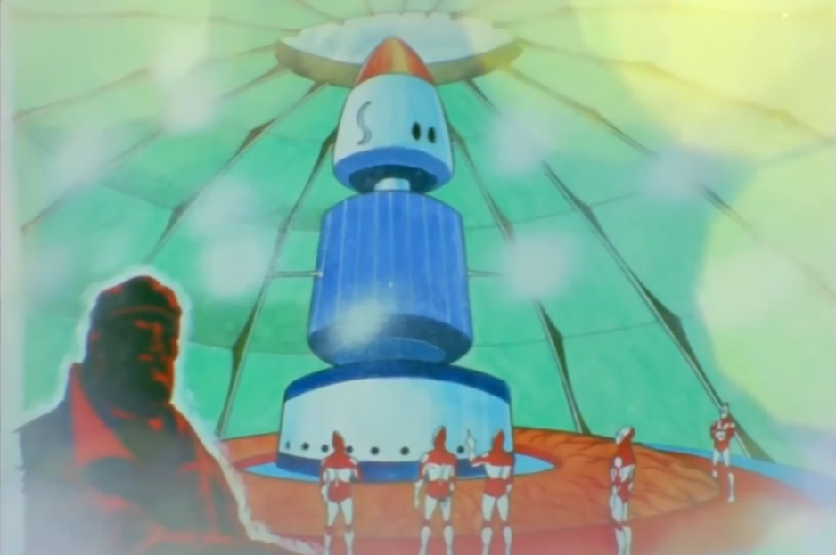

เรื่องราวของ Ultraman
นักรบอุลตร้า หรือ อุลตร้าแมน คือนักรบจากดาว M78 หรือดาวอื่นๆซึ่งมาที่โลกมนุษย์เพื่อปกป้องโลกและสัตว์ประหลาดและนุษย์ต่างดาวที่กำลังจะครองโลก โดยประวัติความเป็นมาของนักรบจากดาวอุตร้าเกิดจาก ย้อนกลับเมื่อสองแสนปีก่อน ในจักรววาลอันแสนกว้างใหญ่ มีกาแล็กซี่ M78 ที่ประกอบไปด้วยดวงดาวกว่า 69 ล้านดวง และที่ใจกลางกาแล็คซี่แห่งนั้น มีดวงดาวดวงหนึ่งชื่อว่า “ดินแดนแห่งแสงสว่าง” หรือ “ดาวอุลตร้า” โดยดวงดาวดวงนี้มีขนาดใหญ่กว่าโลก 60 เท่าและมีประชากร “เผ่าพันธุ์อุลตร้า” อาศัยอยู่กว่า 180,000 ล้านคน ในตอนนั้นประชากรของดาวอุลตร้ายังมีลักษณะไม่แตกต่างจากมนุษย์บนโลก อยู่มาวันหนึ่ง ดวงอาทิตย์ที่คอยให้มอบแสงกว่างและเป็นแหล่งพลังงานให้กับดาวอุลตร้า เกิดระเบิดและสูญสลายไปในพริบตา ทำให้ทั้งดาวตกอยู่ในความมืดมิด ประชากรของดาวอุลตร้าจำนวนครึ่งหนึ่ง ค่อยๆ ล้มตายลง ด้วยความหนาวเย็นและความอดอยาก เมื่อเห็นดังนั้น “ผู้อาวุโสอุลตร้า” ผู้นำของดาวอุลตร้าในขณะนั้น ได้รวบรวมนักวิทยาศาสตร์ที่ยังมีชีวิตรอด ค้นคว้าหาวิธีที่จะทำให้ชาวเมืองที่เหลือสามารถมีชีวิตอยู่ต่อไป และท้ายที่สุด พวกเขาก็สามารถคิดค้นดวงอาทิตย์เทียม ที่เกิดจากเครื่องปฏิกรณ์พลังงานพลาสม่า (Plasma Spark) ชาวอุลตร้าก็ใช้ชีวิตกันอย่างสงบสุขเรื่อยมาก แต่เครื่องปฏิกรณ์พลังงานพลาสม่า ไม่ได้ปล่อยแต่พลังงานพลาสม่าเท่านั้น แต่มันยังปล่อยพลังงานดิฟเฟอร์เรเตอร์ (Differator Energy) ออกมาด้วย ซึ่งหลังจากชาวอุลตร้าได้อาบพลังงานดิฟเฟอร์เรเตอร์มาหลายแสนปี รูปร่างของพวกเขาก็ค่อยๆ เปลี่ยนไป มีพละกำลังที่แข็งแรงยิ่งขึ้น สามารถบินและปล่อยลำแสงพลังงานออกมาจากร่างกายได้
 


